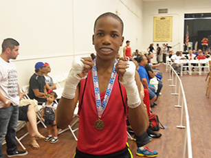
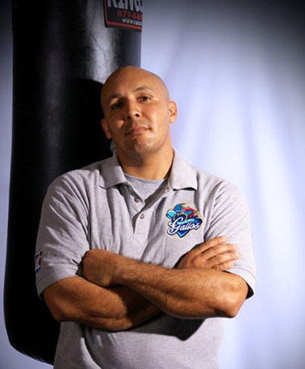

About Us
Our Mission
To provide at-risk youth an opportunity to develop into contributing members of society through their participation in an amateur boxing program.
Our Values
The Heart & Soul Youth Re-Development Program, Inc. is a 501(c)3 nonprofit organization that was established in 2010 as a way to serve the at-risk youth of inner city Miami through an amateur boxing program. Members of the Heart & Soul Boxing team learn the skills to not only compete in amateur boxing, but also how to be contributing members of society. The program is designed to improve athletic capabilities and educational performance, build life skills, and keep our youth off the street and in the gym. Whether or not a member decides to compete in amateur boxing is not important, but rather how commited members are to the team and to their own personal growth is what's important. Under the guidance of Founder Coach Angel Nazario, members endure a six-day-a-week rigorous boxing training program, as well as participate in study hours, career counseling sessions, and a mentoring program.
Our Founder
Francisco "Angel" Nazario founded the Heart & Soul Youth Re-Development Program in south Florida in 2010, and serves as executive director. Nazario strives to carry out the program's mission to introduce at-risk youth to amateur boxing, providing an alternative to criminal activity and gang involvement. Nazario is an active trainer for Olympic amateur boxing and professional boxers, as well as a volunteer amateur boxing official (referee, judge, timekeeper). In his 25+ years of boxing experience, Nazario has worked and competed as a referee and coach in events such as AIBA's World Series of Boxing, the local and regional Men's Golden Gloves, National Women's Golden Gloves, Junior Olympics, Silver Gloves boxing competitions and other LBC competitions. He was also the 2009 Coach Representative with the Florida Gold Coast Amateur Boxing Association (LBC #50). Throughout the years Nazario has acquired worldwide competitive boxing experience in countries such as Puerto Rico, United States, Central America and Mexico. He has participated in the Florida Sunshine State Games and was Florida State Golden Gloves Champion in 1991.
Credentials
- AIBA 1-Star Coach
- USA Boxing Level 2 Coach and Level 3 Referee (LBC #50)
- Certified Personal Trainer with the International Sports Sciences Association (ISSA), and CPR/AED
- Certified Professional Trainer in the State of Florida with the Florida State Boxing Commission